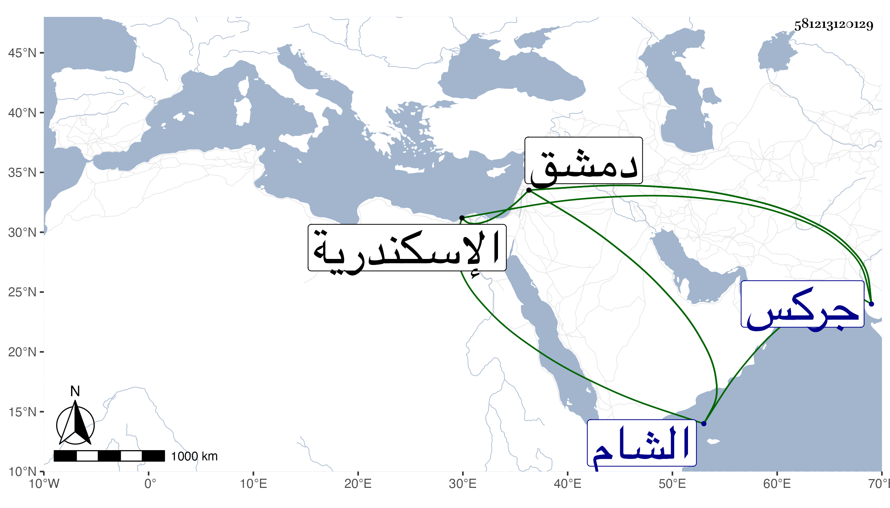

0902Sakhawi.DawLamic.ITO20230111-ara1.EIS1600.581213120129
Biography ID: 581213120129
1079
سودون قريب الظاهر برقوق ويعرف بسيدي سودون . قدم من جركس مع جدته لأمه أخت الظاهر وخالة أمه أم الأتابك بيبرس أخت الظاهر ومع جد أمه الأمير أنص والد الظاهر وأقاربه بطلب من الظاهر حين أتابكيته ، وذلك في سنة ثلاث وثمانين وسبعمائة فرباه في الحريم السلطاني فلما كبر وترعرع رقاه حتى صار مقدما ثم أميراخور كبير ثم بعد موته قبض عليه وسجن باسكندرية ثم أفرج عنه واستقر دوادارا كبيرا مع أقطاع كبير ثم لم يلبث أن استقر نائب الشام وخرج لدفع تيمور وثبت بمن معه ثباتا مشهورا وأبلى بلاء حسنا بحيث أشرف العدو على الخذلان ثم تكاثروا حتى خذل العسكر الشامي ووبخ الطاغية صاحب الترجمة وتوعده بكل سوء محتجا بقتله لرسوله قبل واستمر تحت العقوبة في أسره إلى أن مات إما ذبحا أو تحت العقوبة أو إلقائه للفيلة وذلك بظاهر دمشق في أواخر رجب سنة ثلاث وقد ناف على الثلاثين وهو ممن نشأ في السعادة ومات تحت الاهانة ، وكان أميرا جليلا ذا شكالة حسنة ووجه صبيح وثقة في الناس عارفا بأنواع الفروسية متجملا في ملبسه ومركبه ومماليكه . وقال العيني أنه كان ظالما عاتيا بخيلا متكبرا سيء الخلق دميم الخلقة كثير الشر وهو الذي فتح باب الشر بعد موت الظاهر قال ويقال انه دفن في قيده بدمشق ، وهو في عقود المقريزي .
